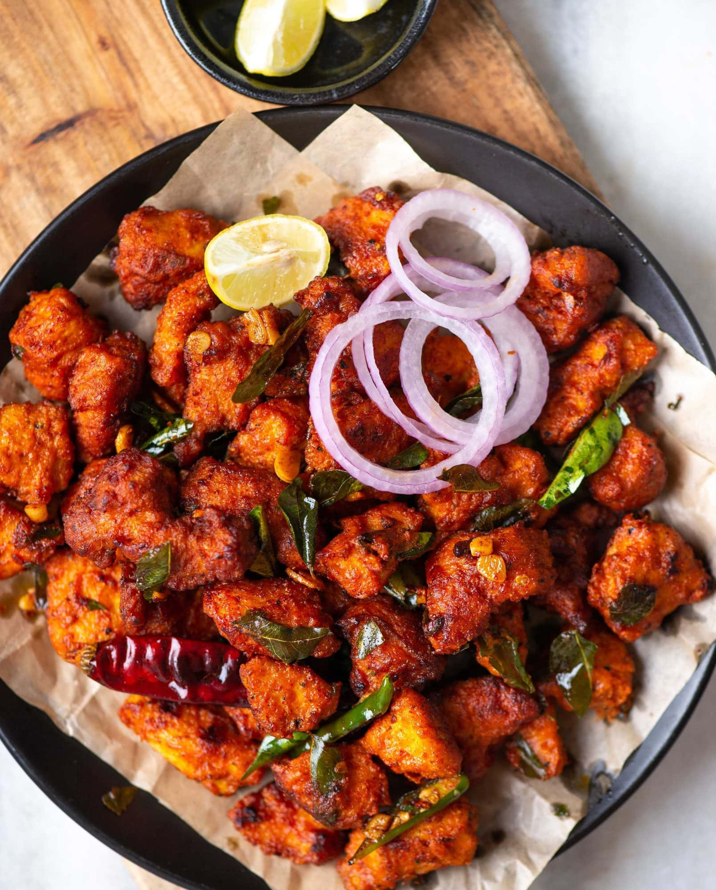
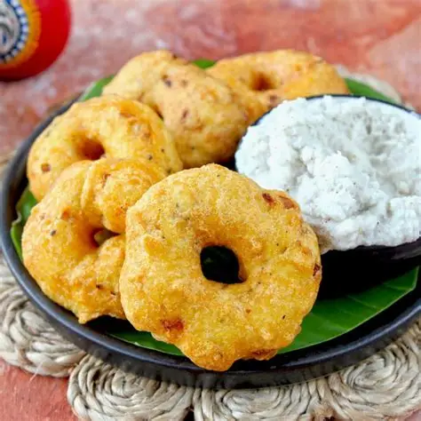

Chicken 65
A spicy, deep-fried chicken dish originating from the famous Buhari Hotel in Chennai. It is flavored with curry leaves, ginger, and garlic.

Medu Vada
Crispy on the outside and soft on the inside, these savory donut-shaped lentil fritters are best enjoyed when dipped in hot sambar.

Ambur Biryani
A unique style of biryani popular in Chennai, made with Seeraga Samba rice and tender meat, offering a distinct aroma and mild spice level.